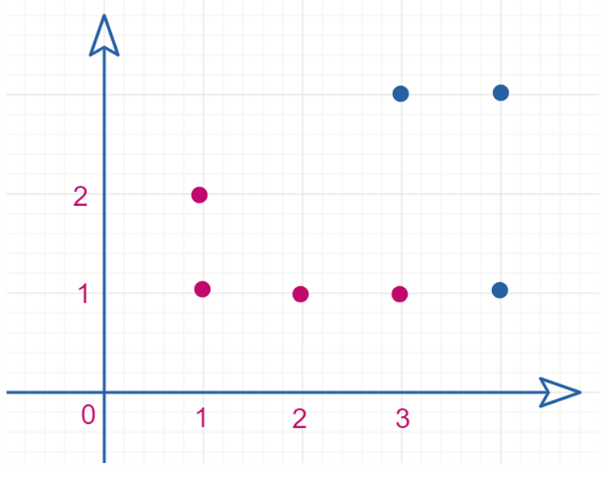

Practical Work Assignment 3
Problem Overview:
Objects are defined by two features and represented as points on a two-dimensional plane. The task is to use the Support Vector Machine (SVM) algorithm to construct a separating hyperplane.
Task Requirements:
Use the Support Vector Machine (SVM) algorithm to construct a separating hyperplane. This hyperplane will separate objects of different classes for data classification.
Methods Used:
- Support Vector Machine (SVM) Algorithm: Classify data by finding the hyperplane with the maximum margin.
- Separating Hyperplane: Divide data points in a two-dimensional space using a hyperplane.


Problem Overview:
Given a set of points, use a nonlinear Support Vector Machine (SVM) algorithm to solve the data classification problem. Nonlinear SVM maps data to a higher-dimensional space, enabling the separation of classes that cannot be divided by a linear hyperplane.
Task Requirements:
Propose suitable data points for the nonlinear SVM algorithm and classify them using the nonlinear SVM algorithm.
Methods Used:
- Nonlinear SVM Algorithm: Map data to a higher-dimensional space using kernel functions.
- Kernel Functions: Use RBF and polynomial kernels.
- High-Dimensional Space Mapping: Achieve linear separability of data.